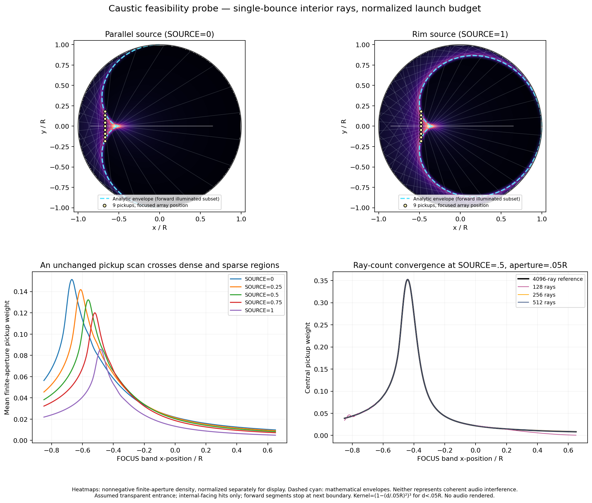

ENGINE STUDY / 04 — ALLOY BODY
Caustic.
Keep the strike.
Find the body.
Preferred Alloy remains unchanged. This pass compares one fuller body setting beneath the same metallic strike. Listen in the first second after the attack.
Compare the bodyTHE LISTENING ROOM
Compare the first second.
Start with Preferred Alloy at C4, then try Fuller body. Use Level matched and compare the body just after the strike. Try C2 and C6 next.
Level matched reduces loudness differences so changes in tone are easier to hear.
BEHIND THE SOUND
A place to
concentrate.
Rays reflect from a circular boundary. Finite pickups collect the paths that pass nearby; path lengths preserve phase before the resonant body is excited.
This preliminary geometry study shows where collected paths concentrate as the source and pickup move. It supports the starting setup; it does not validate the specification’s .001R envelope target or establish how the instrument sounds.
Open the geometry study
YOUR LISTENING NOTES
Keep what you hear.
Notes stay in this browser, tied to each model and clip. Your original-study notes stay with the original recordings. Export them to keep your listening record.
How this was rendered
THE SIGNAL
These are audio files rendered by the Kotlin prototype, played directly in your browser. Mono, 44.1 kHz, with 4× internal oversampling. No external effects or sampled instruments. The browser adds only the listening volume.
THE REVISION
Preferred Alloy stays unchanged. Fuller body changes the strength and decay of the tonal drive beneath the same Alloy metallic strike and resonances. Compare the first second after the attack. The circular path geometry stays fixed, and no reverb is added.
THE BOUNDARY
This first prototype covers circular geometry, source position, and pickup focus. CURVE, SCATTER, ORBIT, seamless HOLD, and phone integration are later work. Replaying a rendered clip is not HOLD. This page is an audition, not an accepted production engine.